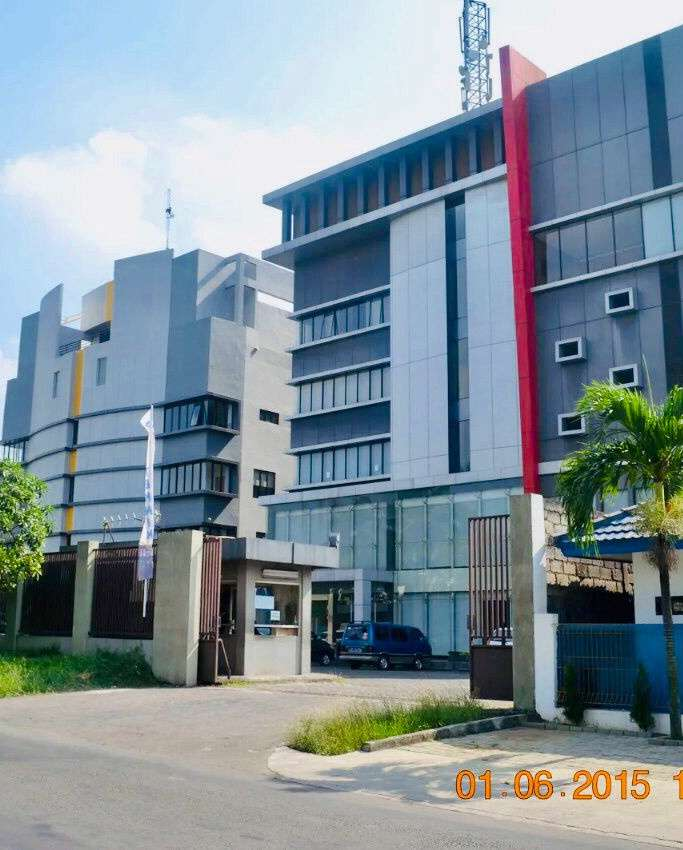
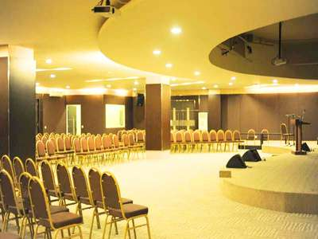
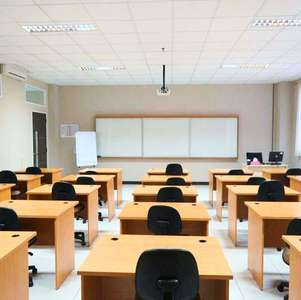
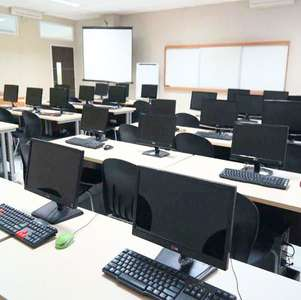
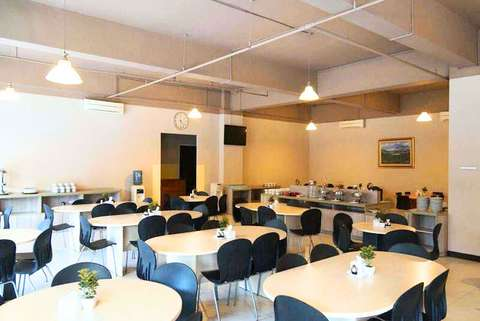
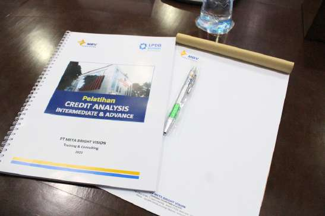

- Home
- Company
- Facility
Fasilitas Gedung
Kami percaya bahwa pengalaman belajar yang optimal didukung oleh lingkungan dan fasilitas yang nyaman serta fungsional.






Fasilitas Utama Kami
Kami percaya bahwa pengalaman belajar yang optimal didukung oleh lingkungan dan fasilitas yang nyaman serta fungsional. Untuk itu, kami menyediakan berbagai fasilitas penunjang agar setiap sesi pelatihan berjalan efektif dan menyenangkan.
Ruang Fasilitas Nyaman
Ruang pelatihan kami dirancang khusus agar peserta dapat belajar dengan fokus dan nyaman. Dilengkapi dengan pendingin ruangan (AC), pencahayaan memadai, serta meja dan kursi ergonomis.
Peralatan Presentasi Lengkap
Setiap ruang dilengkapi dengan proyektor/TV LED, whiteboard, dan sound system untuk mendukung penyampaian materi yang interaktif dan jelas.
Akses Internet (Wi-Fi)
Kami menyediakan akses Wi-Fi gratis bagi peserta agar dapat terhubung dengan materi digital atau melakukan riset selama pelatihan.
Area Istirahat & Snack
Disediakan area santai untuk istirahat dengan minuman ringan dan kudapan, agar peserta bisa melepas penat sejenak di sela sesi pelatihan.
Fasilitas Umum & Tempat Ibadah
Fasilitas toilet bersih, tempat parkir, dan mushola juga tersedia untuk kenyamanan peserta selama mengikuti pelatihan.
Area & ruangan
Ruangan Kelas dan Lab Komputer
Fasilitas kelas dan laboratorium dirancang eksklusif dengan perangkat mutakhir guna menunjang pelatihan yang membutuhkan praktik langsung menggunakan software atau simulasi sistem.
Ruang Auditorium & Conference
Tersedia ruang berskala besar yang ideal untuk kebutuhan seminar, konferensi, lokakarya, atau stadium general dengan daya tampung maksimal dan tata suara (sound system) profesional.
Area Parkir Gedung
Bagi peserta maupun tamu yang membawa kendaraan pribadi, kami menyediakan lahan parkir yang luas, tertata rapi, dan diawasi oleh sistem keamanan selama jam operasional pelatihan berlangsung.
Area Restaurant
Nikmati lezatnya berbagai hidangan serta area santai untuk beristirahat. Disediakan area yang nyaman dengan minuman ringan dan kudapan, agar peserta bisa bersantai sambil berjejaring (networking) di sela sesi pelatihan.
Cikarang Technopark Building
Kawasan Industri Cikarang telah bertransformasi dari konsep kawasan pabrik menjadi sebuah kawasan bisnis terpadu (pabrik, pemukiman, perhotelan, kawasan wisata, bisnis, pendidikan, dll), serta didukung kehadiran perbankan dan pemerintah.